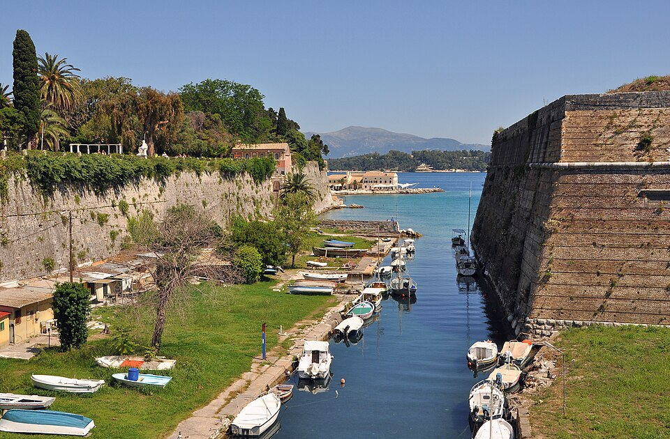
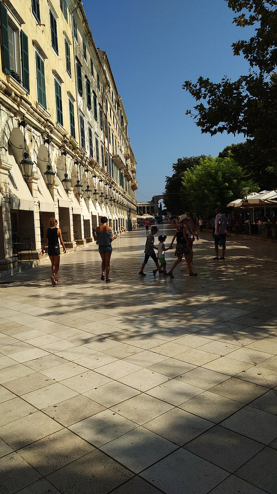
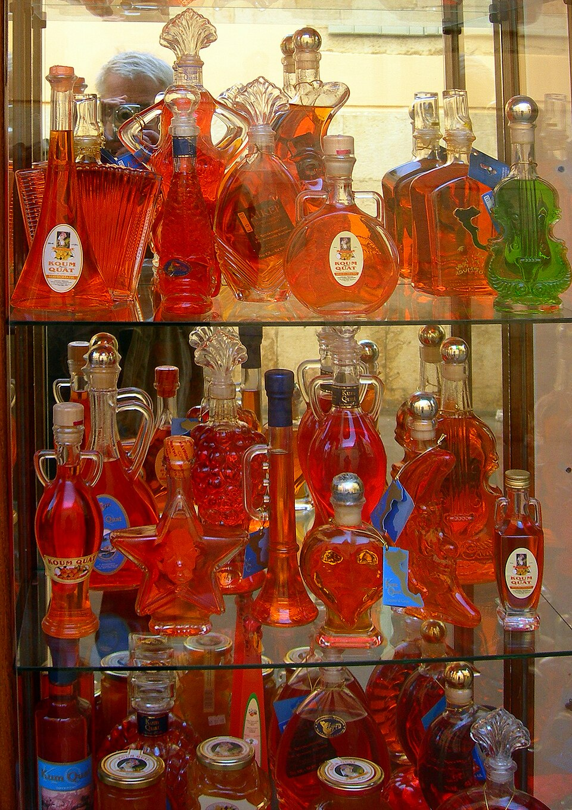

Почему именно такой маршрут
Судно прибывает в New Port; старый город находится примерно в 2–3 км от выхода. От дальнего причала может быть бесплатный внутренний шаттл, затем прогулка около 30–40 минут, городской транспорт или две машины такси. Старая крепость — самое важное посещение, но в ноябре её могут закрывать раньше: в первоначальном плане указан зимний график около 08:30–15:30. В день круиза проверьте точное время и последний вход.
Почасовая программа
| Время | План |
|---|---|
| 12:00–12:45 | Высадка, терминал, шаттл |
| 12:45–13:20 | Дорога в старый город |
| 13:20–14:00 | Старая крепость (проверить зимний вход) |
| 14:00–14:45 | Спианада и Листон |
| 14:45–15:15 | Церковь Святого Спиридона |
| 15:15–16:15 | Обед в таверне |
| 16:15–17:15 | Улочки, кумкват, кофе, туалет |
| 17:15–18:00 | Возвращение в порт |
Реальные фотографии мест и блюд



Достопримечательности
- Старая крепость — Островная панорама, старинные бастионы; ориентир билета €10 за взрослого (перепроверить).
- Спианада и Листон — Приятные площади и аркады; прогулка без оплаты.
- Церковь Святого Спиридона — Храм с мощами святого; соблюдайте правила одежды и время богослужений.
Google Maps: маршруты
Координаты ниже — ориентиры. Маршрут в Google Maps может оптимизировать порядок остановок и не учитывает ограничения портовой территории.
Все точки и координаты
39.62750, 19.90420
39.62460, 19.91740
39.62528, 19.92269
39.62330, 19.92440
39.62323, 19.92870
Где поесть и что заказать
Sofrito, pastitsada, сувлаки, цацики, кумкват. Попробуйте таверну с местным меню; для шести человек уточните стол.
Сувлаки, салаты, мясо на гриле. Ориентир €12–20/чел.; уточнить очереди и часы.
Адрес, отзывы и часы в Google MapsТаверна, традиционные блюда. Ориентир €18–28/чел.; уточнить часы.
Адрес, отзывы и часы в Google MapsЧто купить
Кумкватный ликёр, варенье, цукаты, греческие сладости. Берите подарки в небольших упаковках.
Транспорт, туалеты и нюансы ноября
Пешком около 2–3 км от порта до центра, либо автобус/два такси. Внутренний шаттл зависит от причала. Туалеты — крепость (если доступен), кафе Листона, ресторан. В ноябре дождь и ветер; не ехать на удалённые пляжи.
Расходы по категориям
| Статья | На 1 человека | На группу из 6 |
|---|---|---|
| Крепость | около €10 | около €60 |
| Транспорт | €2–5 | €12–30 |
| Обед | €18–25 | €108–150 |
| Кофе/десерт | €5–7 | €30–42 |
| Покупки | €5–10 | €30–60 |
| ИТОГО | €40–57 | €240–342 |
Ориентир группы: €240–342. Это оценки, не подтверждённые тарифы.